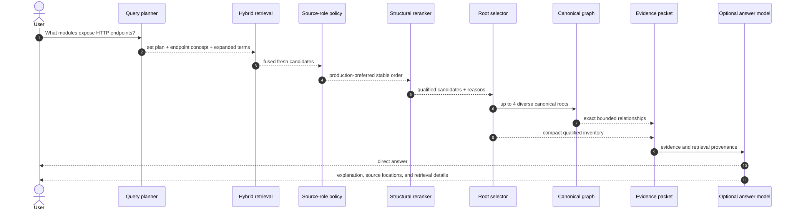

llm-context · visual guide
Page 7 of 7
Concept 07
Producing an evidence-backed answer and measuring quality

The complete runtime sequence

Answer first, explanation second

How the pipeline is evaluated
← Serving
Return to overview ↺